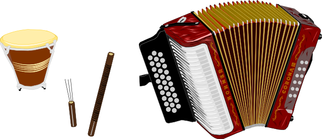

Originating in the Carribean region of Colombia in the late nineteenth century/early twentieth century, vallenato today has become one of Colombia's most popular music genres.
Especially in its earlier years, vallenato was considered a music of the lower classes and limited mostly to Colombia's Caribbean region. As a story-telling folk music genre, vallenato tended to focus a considerable amount on its lyrical content. Much like battle rap in hip-hop (like that featured in the movie "8 Mile"), vallenato singers would often engage in improvisational lyrical battles known as "piqueria."
Traditionally, the music genre was represented by three music instruments that, in turn, represent the three main populations who settled in that land:
the three instruments traditionally used in Vallenato: la guacharaca, la caja, y el acordeon
